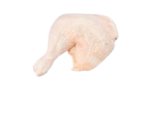
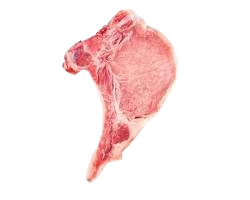
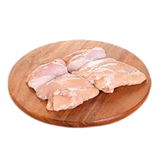

Características:
Pollo entero fresco de granja, sin hormonas ni antibióticos. Peso aproximado de 2.5 kg. Piel crujiente y carne jugosa. Preparación: Sazonar con hierbas frescas y limón, asar al horno a 180°C durante 90 minutos o hasta que la temperatura interna alcance los 75°C. Alas de pollo:

Características:
Alas de pollo de alta calidad, sin piel y bien sazonadas. Empaque de 1 kg. Preparación: Marinar en salsa de barbacoa durante 30 minutos y luego hornear a 200°C durante 25-30 minutos, volteando a la mitad del tiempo de cocción. Patas de pollo:
Características:
Patas de pollo frescas y jugosas, empacadas al vacío. Pack de 8 unidades. Preparación: Cocinar a fuego lento en una olla con verduras, tomate y especias durante 1.5 horas para lograr un guiso tierno y lleno de sabor. Pechugas de pollo:
Características:
Pechugas de pollo sin hueso, piel o grasa, envasadas individualmente. 700 g por paquete. Preparación: Sazonar con ajo, pimienta y limón, luego cocinar a la parrilla o a la sartén a fuego medio durante 15 minutos, volteando una vez. Pernil de pollo:

Características:
Pernil de pollo marinado y listo para cocinar, empacado al vacío. 1.5 kg por unidad. Preparación: Asar en el horno a 160°C durante 2 horas, regando con su propio jugo para mantener la humedad. Chuleta de cerdo:

Características:
Chuletas de cerdo magras y bien cortadas, sin hueso. Envase de 4 chuletas. Preparación: Marinadas con mostaza, miel y romero, asar a la parrilla durante 15 minutos a fuego medio-alto, volteando una vez. Filete de pechuga:
Características:
Filetes de pechuga de pollo finamente cortados, sin piel y sin hueso. Paquete de 500 g. Preparación: Cocinar a la sartén con aceite de oliva a fuego medio durante 10 minutos, agregando vegetales al final para un plato completo. Churrascos de pechuga:

Características: Churrascos de pechuga de pollo sazonados, listos para la parrilla. 6 unidades por paquete.
Preparación: Asar a la parrilla a temperatura media-alta durante 10-12 minutos, dando vuelta una vez, hasta que alcancen una temperatura interna de 74°C. Acompañar con una salsa de hierbas frescas.